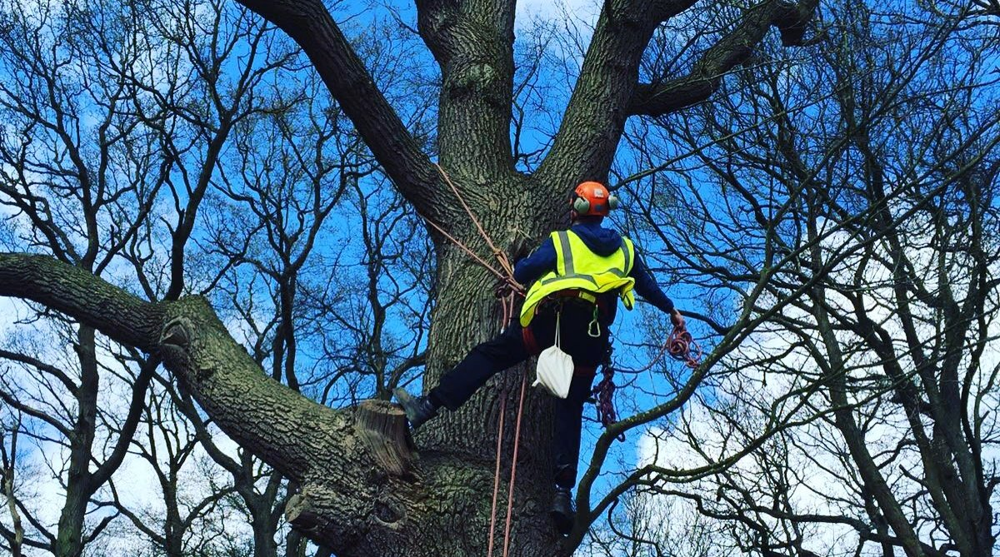

"A pragmatic, proportionate and reasonable approach to tree safety"
The chance of being killed by a tree is 1:10,000,000 and therefore the law does not expect land
owners to maintain their trees to a ‘completely safe’ condition. The sheer nature of a tree does not
allow them to ever be completely safe. However, if you are a land owner or responsible for the
management of trees, you are required to manage risk within reasonable levels.
Rockell Tree Surveying offer professional tree inspections of individual trees in private dwellings to
extensive populations across a number of landscapes. Our survey reports include accurate data
which is displayed spatially using GIS mapping software.
Utilising QTRA survey methodology, all relevant information on the trees physiological and
structural condition and the identification and management of significant pest and diseases is
provided and capped off with any remedial/management recommendations, outlined with safe
timescales and with highlight levels of work priorities.
Trees are an important aspect of our environment and at Rockell Tree Surveying we understand
the importance of a trees ecological, cultural and historic value. We will ensure any legal
requirements, such as Tree Preservation Order (TPO), felling licensing and locality within a
conservation area, are identified and integrated into the specification and adhered to following the
necessary channels.
To ensure that management for large tree populations is both practical and proportionate, we will
normally carry out a preliminary site visit to help distinguish the client’s requirements and assess
how the land is used around the trees. The frequency and type of inspection can be customised to
ensure that resources are distributed to the trees which require it the most. Working to a bespoke
risk management plan is a cost effective and defendable approach to tree safety. This ensures
peace of mind with regards to the condition of your trees and demonstrates that you are fulfilling
your duty of care.
A number of species of bat fully rely on trees for roost sites, compared to others who use them for
limited parts of the year. The UK is home to seventeen bat species, thirteen of which are known to
roost in trees. Any tree has the potential to house bats and identifying them solely from the ground
is not an easy task.
Undertaking a single aerial survey can provide presence/absence. This may remove the need to
undertake a number of dusk/dawn surveys, which can involve costly survey effort and be limited
within a window between April-October to accommodate bat activity months.
Aerial tree surveys are a recognised by the Bat Conservation Trust as a technique to assess bat
roost suitability. The methodology is also considered to provide greater rates of success than
traditional survey techniques.
Rockell Tree Surveying has ample experience climbing and inspecting trees for bats across a
number of different settings. We have staff who climb at a high level of standard ensuring health
and safety is paramount and that any potential feature is fully inspected using endoscopes.